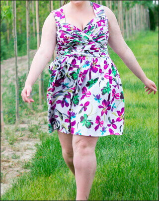
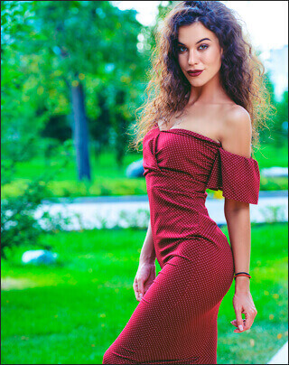
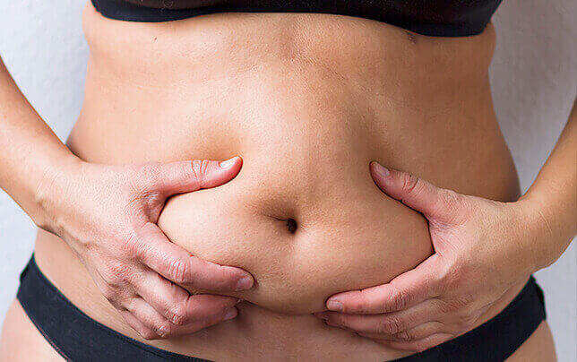
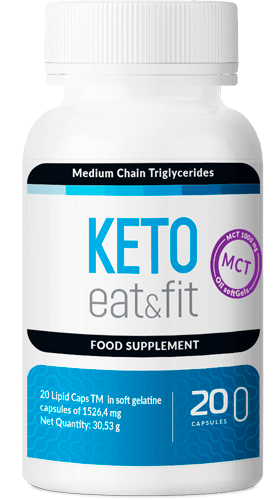
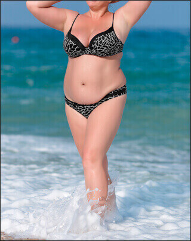
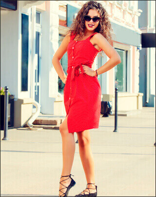
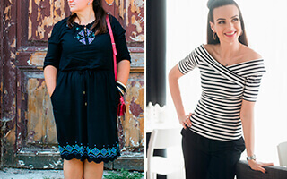

Cómo casi pierdo mi intimidad por el exceso de peso
6.967
10
A mucha gente le parecerá graciosa mi historia. Bueno, no creo que cualquier chica pueda aplastar a su pareja durante el sexo. En ese momento no me hizo ni una pizca de gracia, quería que me tragase la tierra. Mi grasa me había privado de todas las alegrías de la vida y, del sexo, en particular.


Quién sabe qué me hubiera pasado si no hubiera perdido 30 kg.
Toda mi vida me había preocupado mi obesidad: había pasado por cientos de dietas, ejercicio físico, hipnosis y otros autoengaños. Pero el amor a las hamburguesas y la pizza era más fuerte que todo eso. Los kilos extra se quemaban con dificultad y regresaban a gran velocidad.

En mi vida personal tampoco había nada bueno. En fin, ¿a qué chico le gustaría salir con una chica que pesa 2 veces más que él? Por eso me conformaba con un sexo casual y sin compromiso con mi amigo Álvaro.
Un día me llamó para tomarnos un "café". Bebimos un poco, me sentí más relajada que nunca y decidí ponerme encima de él. Algo salió mal casi de inmediato: Álvaro se puso tan rojo como un tomate y comenzó a jadear. Empecé a darle palmaditas en las mejillas, pero él se ponía cada vez peor. Hizo un gesto para que me bajara de él y, solo entonces, volvió a respirar con normalidad. Me echó de su casa y me dijo que no le llamara de nuevo.
Me había quedado sin palabras. Después de ese incidente, mi
autoestima estaba por los suelos. Me di cuenta de que tenía
que adelgazar, al menos un poco, ya que de lo contrario no podría
vivir plenamente.
Como ya había probado todos los métodos conocidos, comencé a buscar otros.
Fui a la consulta de un nutricionista que me habían recomendado varias personas a la vez. Él no me habló sobre la alimentación adecuada y tampoco me hizo pruebas, sino que simplemente me recetó un único producto: Fortunella .

Son unas capsulas hechas a base de triglicérido de cadena media
que aceleran el metabolismo.
Comienzan el proceso de la quema de grasa, dispersando todos los procesos metabólicos. Esto era justamente lo que necesitaba.
MÁS INFORMACIÓN SOBRE Fortunella
Estuve tomándo las capsulas tres veces al día, por la mañana y por la tarde y por la noche. Las añadía a las bebidas o a la comida. El primer día no noté nada, el segundo tampoco. Más tarde noté una oleada de fuerzas y energía - podía despertarme con más facilidad por la mañana.
En una semana comencé a comer 2 veces menos. Para el almuerzo, me sentía llena con una ensalada ligera y un vaso de zumo. No me sentía cansada, incluso comencé a correr por las tardes.


¡En un mes perdí 23 kg! Seguí perdiendo peso, pero no tanto -
el cuerpo sabía cuándo parar.
Ahora peso 59 kg y me quiero más que nunca. Ya han pasado 6 meses y el peso sigue como está. Mi vida ha cambiado completamente. Ahora elijo a los chicos que me gustan y, lo cierto es que no tengo miedo de aplastar a uno de ellos durante el sexo. Digan lo que digan, la apariencia juega un papel muy importante en nuestra vida. Perdí peso y todas las puertas se abrieron ante mí a la vez.
Para calcular el tiempo y la dosis de Fortunella, responded a algunas preguntas. ¡Todo por vosotras, chicas!
¿Tu género?
hombre mujerPor favor, especifica tu edad
17-25 26-39 40-55 55+¡Genial! Un par de preguntas más. ¿Cuál es tu estatura?
150-165 166-175 176-190 190+Y, por supuesto, ¿cuánto pesas?
45-55 56-67 68-79 80-93 94-105 106+Necesito unos segundos para calcular los resultados.
¡Hecho!
Para perder peso, ¡no necesitas ponerte a dieta! Prueba a tomar las capsulas Fortunella 3 veces al día, por la mañana, por la tarde antes o durante las comidas. Reducirán tu apetito y comenzarán el proceso de la quema de grasa.
Los aminoácidos y las proteínas que componen Fortunella aceleran el metabolismo y comienzan a combatir los depósitos de grasa cuando ingresan al cuerpo. Gracias a esto, la pérdida de peso será rápida e inofensiva para el cuerpo.
Para fortalecer el resultado, añade actividad física a tu agenda. De este modo acelerarás los procesos metabólicos y podrás lograr unos resultados impresionantes en el menor tiempo posible. Fortunella te dará energía extra y acelerará el proceso de recuperación.
¡Buena suerte!


Comentarios
Hace tiempo que quería probar Fortunella, pero tenía miedo de que fuera todo un engaño. Mi amiga ha perdido 24 kg con la ayuda de estas capsulas. Me he atrevido yo también y ya las he pedido.
¿Alguien sigue haciendo dieta? Después de probar Fortunella me olvidé de su existencia. He adelgazado 17 kg en un mes sin problemas. El peso sigue como está durante seis meses.
Jajaja pobre chiquillo, por eso no lo hago con chicas gordas.
Parece sacado de una película. La chica ha hecho muy bien en perder peso. Yo, por ejemplo, no consigo perder esos kilos de más después del embarazo. Estoy pensando en probar estas capsulas también.
¡No me puedo imaginar cómo se puede gustar una siendo gorda! Yo también soy propensa a la gordura, pero lucho con eso constantemente. Menos mal que he descubierto Fortunella, ahora ya no hay problemas con los kilos de más. He adelgazado 11 kg y el peso sigue como está.
Muchas gracias por el consejo. Yo también he probado todas las dietas posibles, pero nada. No tengo que perder muchos kilos, tan solo unos 12-14, pero no puedo hacerlo yo misma.
Creo que una mujer es hermosa sin importar la figura que tenga. ¡Y no todos los hombres necesitan a esos palos andantes que no tienen nada a lo que agarrarse!